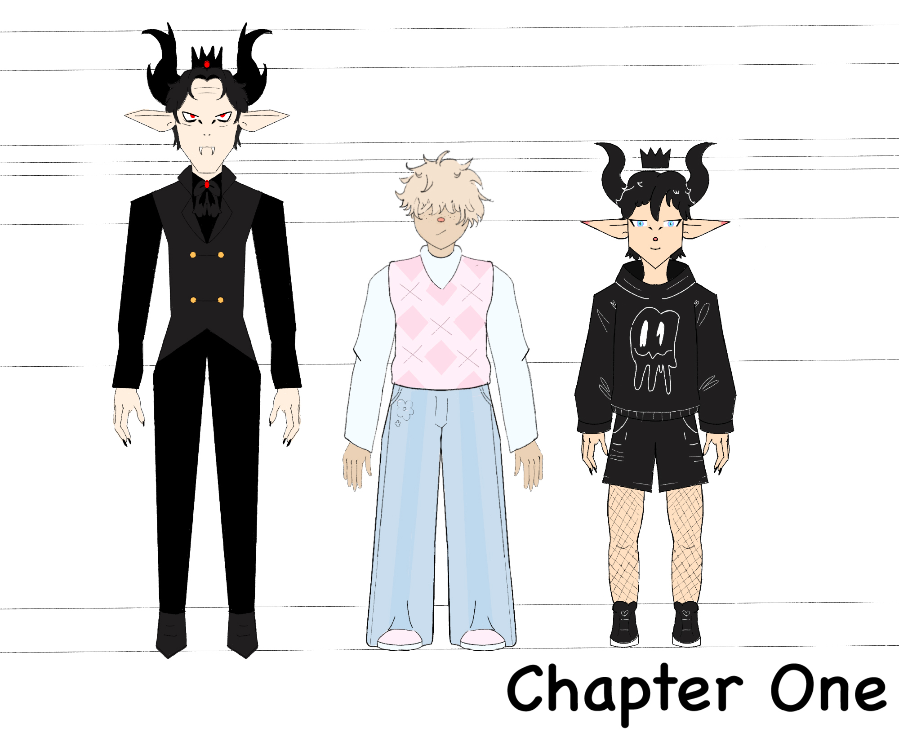

Hello! My name is Nichole. I am an animation student at Huntington University. Beyond drawing, I enjoy spending time reading and crafting.
My favorite book series is Percy Jackson by Rick Riordan. That is a set of books that I can read again and again. It connects me back to my love for Greek Mythology, which I also love to study.
I am currently working on an independent project, in which I am producing a comic called Felix. The story will be a slice-of-life about the two main characters, Felix and his boyfriend, Milo. Felix is a vampire with a traumatic past, and Milo is a ray of sunshine. Milo helps Felix live his new life after being kicked out by his father. I am excited to see where Felix's story takes me. Below is my character line-up for chapter one of my story.
Visit Rick Riordan's page if you are interested in the Percy Jackson series like me: Rick Riordan Official Website